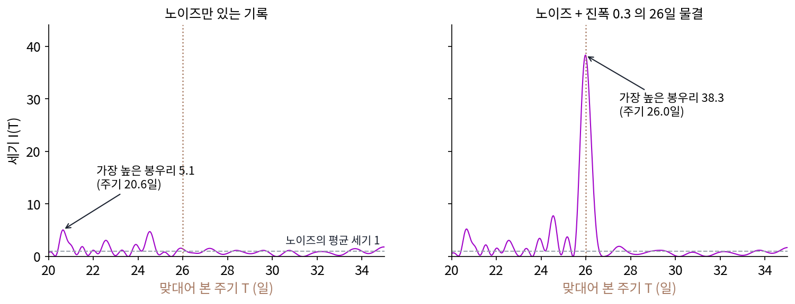
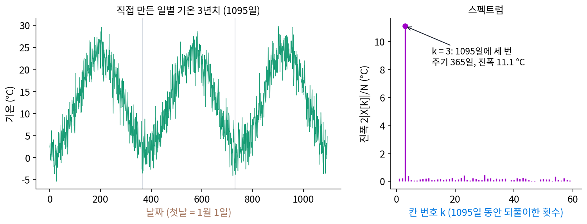
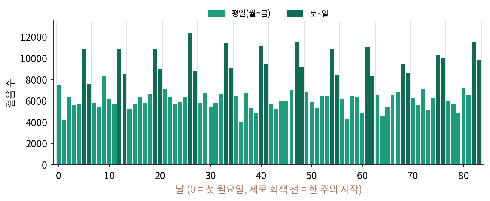
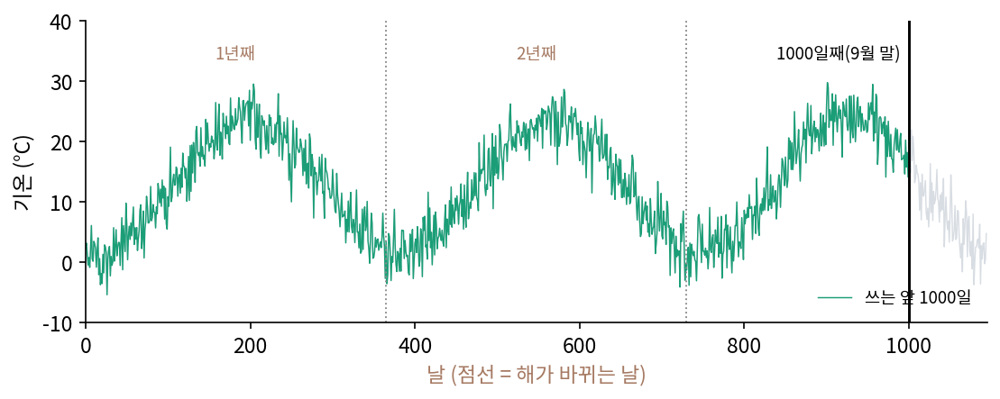
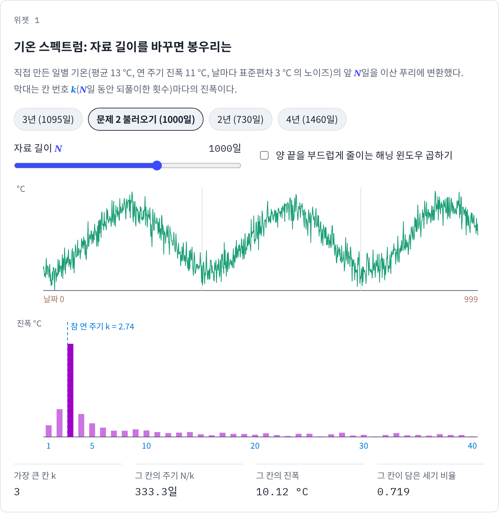
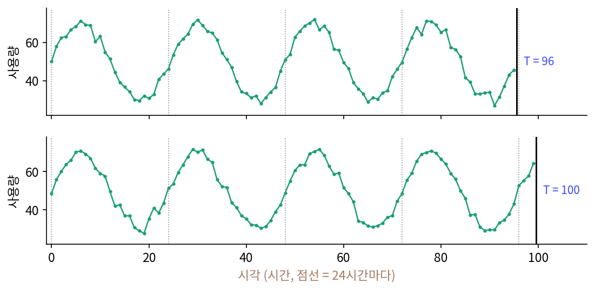

차원별 신호: 시계열, 영상, 부피, 그래프
이 장의 물음
소리는 시간 한 줄 위에 놓인 값이고, 그림은 가로·세로 두 줄 위에 놓인 값이었다. 어느 쪽이든 칸으로 적은 신호를 사인·코사인 물결의 계수로 다시 적으면, 어떤 주파수에 세기가 몰려 있는지가 한눈에 보였다. 그런데 손에 들어오는 자료는 이 두 가지로 끝나지 않는다. 날마다 쌓이는 기온과 판매량은 몇 년씩 이어지는 긴 줄이고, 휴대폰으로 찍은 영상은 가로·세로에 시간이 더해진 세 줄 위의 값이다. 병원의 단층 촬영 장치는 몸속 단면을 한 번도 직접 보지 못하고, 몸을 여러 방향으로 꿰뚫은 X선이 얼마나 약해졌는지만 잰다. 도로 위 교통 센서나 친구 관계로 이어진 사람들처럼, 칸이 줄로 서 있지 않고 이웃 관계로만 이어진 자료도 있다.
ML 모델도 이런 자료를 받는다. 시계열 예측 라이브러리는 「1년에 한 번」「1주에 한 번」 되풀이되는 성분을 따로 다루고, 영상 생성 모델은 프레임 81장을 압축기로 줄여, 시간 쪽으로 네 배 적은 21장짜리 잠재(압축기가 줄여 적은 그림 묶음)로 바꿔 다룬다. 그래프 신경망은 「이웃의 평균」을 층마다 거듭하는데, 이것들은 모두 같은 생각에서 나온 것일까?
이 장은 다음 물음에 차례로 답한다.
- 몇 년치 자료에 숨은 주기를, 미리 알지 못한 채 찾아낼 수 있을까?
- 그림이 움직이면 그 스펙트럼에는 무슨 일이 생길까?
- 몸을 꿰뚫은 그림자 여러 장만으로 몸속 단면을 되살릴 수 있을까? 그림자가 몇 장이면 될까?
- 칸이 줄로 서 있지 않은 그래프 위의 값에도 「물결」이 있을까? 있다면 무엇이 그 물결을 정할까?
시계열: 계절성은 스펙트럼의 봉우리
몇 년치 일별 기온을 그래프로 그리면 여름과 겨울이 번갈아 오는 것이 눈에 보인다. 그런데 날마다의 노이즈가 크거나, 되풀이 주기가 1년처럼 이미 아는 값이 아니라면 어떨까? 걸음 수, 전력 사용량, 가게 매출처럼 주기가 하나인지 여럿인지, 며칠인지 모르는 자료에서 「되풀이되는 성분」을 어떻게 찾아낼까? 눈으로 봉우리 사이를 재는 대신 숫자로 답을 내는 방법이 있을까?
역사: 숨은 주기를 찾는 그림
19세기 말 기상학자와 천문학자들은 기록에서 주기를 찾느라 바빴다. 해의 흑점 수가 11년쯤마다 늘었다 줄어든다는 것이 알려지자, 비의 양이나 지구 자기장 같은 다른 기록에도 해와 이어진 주기가 숨어 있다는 주장이 잇따랐다. 해가 한 바퀴 자전하는 시간과 비슷한 26일마다 기상 현상이 되풀이된다는 주장도 그중 하나였다.
영국의 물리학자 슈스터(Arthur Schuster)는 1898년 학술지 『지자기』에 「숨은 주기를 찾는 법과, 기상 현상의 26일 주기라는 주장에 대한 적용」을 냈다. 그는 기록을 여러 주기의 물결과 맞대어 보고, 주기마다 그 물결과 얼마나 맞는지를 세기로 계산해 늘어놓았다. 이렇게 주기마다의 세기를 늘어놓은 것을 지금도 「주기도(periodogram)」라 부르고, 그 이름과 방법을 처음 내놓은 사람으로 슈스터를 꼽는다. 눈으로 「대충 26일쯤 같다」고 말하던 일을, 주기마다 숫자 하나를 매기는 일로 바꾼 것이다.


주기마다 세기를 매기는 거면 지금은 numpy 로 고속 푸리에 변환 한 줄이잖아요. 1898년에는 그게 그렇게 큰일이었어요?

고속 푸리에 변환은 1965년에 나왔어요. 슈스터는 맞대어 볼 주기 하나마다 무엇을 해야 했을까요?

기록의 칸마다 그 주기의 사인 값과 코사인 값을 곱해서 더하는 거니까… 3년치 일별 기록이면 주기 하나에 곱셈이 1095 × 2번이에요. 주기를 100개만 맞대어도 21만 9천 번을 손으로 해야 하네요.

사인 값도 하나하나 표에서 찾아야 했을 테고요. 맞대어 볼 주기를 마음대로 늘릴 수도 없었겠어요.

계산만 어려운 게 아니었어요. 노이즈만 있는 기록에서도 어떤 주기는 우연히 조금 높게 나와요. 26일 주기라는 주장도 그런 우연인지 아닌지를 가려야 했죠. 봉우리가 섰을 때 진짜인지 어떻게 가릴까요?

음, 노이즈만 있을 때 세기가 보통 얼마쯤 나오는지를 먼저 알아야 할 것 같아요. 그보다 훨씬 높이 서야 진짜라고 할 수 있고요.

그럼 주기를 미리 아는 자료로 먼저 해 보면 되겠네. 1년 주기를 넣은 기온이면, 그 봉우리는 노이즈가 만드는 세기보다 몇 배나 높이 설까?
3년치 기온의 봉우리 하나
주기를 아는 자료로 먼저 확인해 보자. 평균 13 °C, 1년 주기의 진폭 11 °C로 오르내리고 1월 중순이 가장 추운 기온에, 날마다 표준편차 3 °C 의 노이즈를 더해 3년치 1095일을 직접 만들었다(씨앗 7). 평균은 12.76 °C, 가장 추운 날은 26일째의 −5.4 °C, 가장 더운 날은 901일째의 29.8 °C다.
이 1095칸을 이산 푸리에 변환하면 계수 1095개가 나오고, 칸 번호 k는 1095일 동안 물결이 몇 번 되풀이되는지를 센다. 계수의 크기 |X[k]|가 큰 칸을 차례로 늘어놓으면 아래와 같다.
| 칸 번호 k | 주기 1095/k (일) | 계수 크기 |X[k]| | 세기 비율 |
|---|---|---|---|
| 3 | 365.0 | 6079.3 | 0.8838 |
| 30 | 36.5 | 251.0 | 0.0015 |
| 282 | 3.9 | 234.9 | 0.0013 |
| 23 | 47.6 | 232.5 | 0.0013 |
「세기 비율」은 평균을 뺀 나머지 세기(계수 크기의 제곱) 가운데 그 칸과 켤레 칸(k와 1095 − k)의 세기를 더해 차지하는 비율이다. 칸 3 하나가 세기의 88%를 담았고, 둘째로 큰 칸은 0.15%다. 둘째 칸의 주기 36.5일은 만들 때 넣은 적이 없는 주기로, 노이즈가 우연히 그 물결과 조금 닮았을 뿐이다. 칸 3을 뺀 나머지 칸의 세기는 평균 8902로, 노이즈만 있을 때 기대하는 세기 1095 × 3² = 9855 근처에 고르게 흩어져 있다. 칸 3의 세기는 그 4151배다.

봉우리 칸의 번호에서 주기를 읽는데, 칸 번호 k는 「N칸 동안 k번」이므로 주기는 N/k칸이다.
칸 3의 진폭은 2 × 6079.3/1095 = 11.10 °C 로, 만들 때 넣은 11 °C 와 거의 같다. 계수의 각도로 가장 추운 날을 거꾸로 읽으면 16.3일째가 나온다(넣은 값은 15일째). 노이즈가 클 때 하루하루의 기록으로는 가장 추운 날이 26일째로 보였지만, 1095칸을 모두 써서 물결 하나의 계수로 읽으면 노이즈가 서로 지워져 더 가까운 답이 나온다.
자료가 어떤 주기로 되풀이되는 것을 계절성 (되풀이 주기 / seasonality)이라 하고, 계절성은 스펙트럼에서 그 주기에 해당하는 칸의 봉우리로 나타난다. 「계절」이라는 이름은 1년 주기에서 왔지만 1주, 하루처럼 어떤 주기에도 쓴다. 봉우리 칸이 하나로 깔끔하게 선 것은 자료가 정수 해, 3년을 덮어서인데, 자료 길이가 1년의 정수배가 아니면 무슨 일이 생기는지는 아래 문제 2에서 본다.
ML에서: 예측 모델이 주기를 다루는 두 길
메타가 공개한 시계열 예측 라이브러리 Prophet(테일러·레담, 2018)은 계절성을 아예 물결의 합으로 적는다. 공식 문서에 따르면 1년 주기는 기본으로 푸리에 급수 10차까지, 1주 주기는 3차까지 쓴다. 차수 하나에 사인과 코사인 계수가 하나씩 있으니 1년 주기에 계수 20개, 1주 주기에 6개다. 모델이 배우는 것은 이 계수들이고, 차수를 올리면 계절 모양이 더 빨리 바뀔 수 있다. 다만 여기서는 주기를 사람이 미리 알려 준다.
주기를 모르는 경우에는 스펙트럼의 봉우리를 그대로 쓰는 모델도 있다. 우하이쉬(Haixu Wu)와 동료들의 TimesNet(2022년 공개)은 입력 구간을 고속 푸리에 변환해 크기가 가장 큰 칸 몇 개를 고르고, 고른 칸 번호로 주기를 정한 뒤 1차원 자료를 「주기 × 주기 수」 꼴의 2차원 표로 접어 합성곱 신경망에 넣는다. 공개 코드(Time-Series-Library 의 models/TimesNet.py, 함수 FFT_for_Period)는 주기를 「구간 길이 ÷ 칸 번호」를 정수로 내린 값으로 계산한다. 이렇게 계산한 주기가 언제 어긋나는지는 아래 문제 3에서 따진다.
문제 1. 12주 동안의 걸음 수
민준이 12주(84일) 동안 하루 걸음 수를 기록했다. 첫날은 월요일이고, 평일에는 6000보 안팎, 토요일은 11000보, 일요일은 9000보 안팎을 걸었다(날마다 표준편차 700보의 노이즈, 직접 만든 자료). (가) 84칸을 이산 푸리에 변환하면 어느 칸 번호에 봉우리가 서고, 그 주기는 며칠인가? (나) 그 밖에도 칸 24와 36에 봉우리가 선다. 주기 3.5일, 2.33일로 되풀이하는 생활 습관이 따로 있다는 뜻인가? (다) 한 주의 모양이 매끄러운 사인 물결 하나였다면 칸 24의 세기는 어떻게 되는가?

(가)는 일주일에 한 번이니까 84 ÷ 7 = 12, 칸 12요. 세기 비율이 0.5727이에요. (나)는 칸 24가 0.2412, 칸 36이 0.0651이나 되는데… 사흘 반마다 뭔가 했나 봐요. 수요일이랑 토요일에 운동했나?
민준 학생 자료에 수요일에 더 걸은 날이 있었나요? 평일은 다 6000보 안팎이었죠.
아니요. 평일은 다 같아요. 그런데 왜 칸 24에 봉우리가 서죠?
한 주의 모양부터 봐야 할 것 같아. 닷새 내내 평평하다가 주말 이틀만 확 솟잖아.
주기 7일짜리 사인 물결 하나로 그 모양을 그리면 어디가 모자랄까요?
사인 물결은 한 주의 반은 위, 반은 아래로 부드럽게 오르내려요. 이틀만 뾰족하게 솟는 모양은 못 만들어요. 더 빨리 출렁이는 물결을 보태야 할 텐데, 매주 같은 모양이 되려면 주기가 7일을 나누어떨어져야 하니까… 3.5일, 2.33일이요?
확인해 봐요. 한 주 7칸 [6000, 6000, 6000, 6000, 6000, 11000, 9000]만 이산 푸리에 변환하면요?

해 볼게요. |X[j]|/7 은 칸 1, 2, 3 에서 1037.1, 746.8, 377.2예요.

84일 자료의 칸 12, 24, 36 은 1088.5, 706.4, 367.0 이었어. 거의 같네?

12주 자료의 칸 12·24·36 이 한 주 모양의 칸 1·2·3 이었네요. 칸 24와 36은 주기 7일의 둘째·셋째 배음이고요.
(다)처럼 한 주 모양이 매끄러운 사인 물결 하나였다면요?
배음이 필요 없으니까 칸 24의 세기 비율은 0이에요.

피아노에서 도 하나만 쳐도 한 옥타브 위 도와 그 위 솔이 같이 울리잖아. 그 소리를 듣고 건반을 세 개 쳤다고 하면 안 되는 거랑 같아. 칸 24·36 도 따로 친 건반이 아니라 칸 12 의 배음이야.
문제 2. 1000일만 있으면
같은 기온 자료를 1095일이 아니라 앞 1000일만 쓴다. (가) 봉우리는 어느 칸에 서고, 그 칸으로 읽은 주기는 며칠인가? 1년 주기가 들어가야 할 칸 번호는 얼마인가? (나) 칸 3 하나가 담은 세기 비율과, 칸 1~6 이 함께 담은 비율을 구하고, 1095일 때와 비교하라. (다) 정수 해 길이로 자를 수 없다면 무엇을 할 수 있는가? (위젯 1의 「문제 2 불러오기」로 확인해 보자.)

(가)는 봉우리가 칸 3이니까 1000 ÷ 3 = 333.3일이요. 1년 주기가 들어갈 칸은 1000 ÷ 365 = 2.740인데, 칸 번호는 정수뿐이라 그런 칸이 없어요. 가장 가까운 칸 3이 대신 선 거네요.
칸 하나에 다 들어가지 못한 세기는 어디로 갔을까요? (나)로 확인해 봐요.
칸 3 하나가 0.7194, 칸 2가 0.0641, 칸 4가 0.0437이에요. 1095일일 때는 칸 3 하나가 0.8838이었으니까 이웃 칸으로 번졌네요. 칸 1~6 을 다 더해도 0.8610 이라, 0.88 보다 작으니 조금은 더 멀리 샜고요.
노이즈 없이 1년 물결만 1000일 넣어 봐도 칸 6 이상으로 3.69%가 새요. 왜 하필 멀리까지 새는지, 이산 푸리에 변환이 자료를 어떻게 본다고 했는지 떠올려 봐요.
이산 푸리에 변환은 1000칸이 끝없이 되풀이된다고 봐요. 그러면 1000일째 다음이 첫날인데… 1000일째 끝은 9월 말이고 첫날은 1월 1일이에요.
9월 말 기온 다음에 바로 1월 기온이 오는 거네. 뚝 끊기잖아.
응. 끊긴 곳은 높은 칸까지 계수를 만들어.
그럼 (다)는 어떻게 할까요?

끊긴 곳이 문제면 끝을 부드럽게 0으로 줄이면 되겠네요. 해닝 윈도우를 곱해 보니까 노이즈 없는 1년 물결에서는 칸 6 이상으로 새는 게 3.69%에서 0.0049%로 줄어요. 노이즈 있는 자료에서는 0.1462가 0.1184가 되고요. 노이즈는 원래 모든 칸에 고르게 있으니까 윈도우를 대도 그만큼은 남네요.
새는 건 줄었어요. 그런데 봉우리는 여전히 칸 3, 333.3일에 서 있죠. 1년이 칸 사이에 끼어 있으면요?
음, 칸 사이를 촘촘히 보면 되겠네요. 1000칸 뒤에 0을 9000개 붙여 10000칸으로 해 볼게요. 봉우리가 칸 27, 주기 370.4일로 읽혀요. 333.3일보다 훨씬 가까워요.

그래요. 정수 해로 자를 수 있으면 그게 가장 좋고, 못 자르면 윈도우로 끊긴 곳을 누그러뜨리고, 0을 붙여 칸 사이를 촘촘히 읽어요. 다만 0을 붙여도 봉우리의 폭 자체는 1000일 자료가 정하니까 새 정보가 생기지는 않아요.

문제 3. TimesNet 이 고른 주기
한 시간마다 잰 전력 사용량에 하루 주기(24시간) 물결이 있다(직접 만든 자료, 씨앗 11). TimesNet 의 주기 계산은 「크기가 가장 큰 칸 번호 k 를 고르고, 주기 = 구간 길이 T 를 k 로 나눠 정수로 내린 값」이다. (가) T = 96시간과 T = 100시간에서 고른 주기는 각각 얼마인가? (나) 하루 주기와 한 주(168시간) 주기가 함께 있는 자료를 T = 336시간(2주)과 T = 720시간(30일)으로 잘라 위의 두 칸을 고르면? (다) 모델에 넣을 구간 길이를 정할 때 무엇을 생각해야 하는가?

(가)는 96시간이면 칸 4, 96 ÷ 4 = 24시간이요. 100시간이면 칸 4가 또 가장 크고 100 ÷ 4 = 25시간이요. 1시간 틀렸지만 그 정도는 괜찮지 않아요?
문제 2(1000일 기온)에서는 1년이 칸 사이에 끼어 봉우리가 365일 대신 333일로 읽혔죠. 여기서는 하루가 칸 사이에 끼어 24시간이 25시간으로 읽힌 거예요. 그 25시간으로 자료를 접으면 어떻게 될까요?
하루치를 25칸씩 접으면 줄마다 한 시간씩 밀려요. 4일이면 끝 줄은 3시간 어긋나니까, 합성곱 신경망이 위아래 줄에서 같은 시각을 같은 자리로 못 보네요.
(나)는 30일이 2주보다 두 배 넘게 기니까 주기도 더 정확하게 나오겠지. 2주면 칸 14가 주기 24, 칸 2가 주기 168로 둘 다 맞아. 30일은 칸 30이 주기 24로 맞고, 둘째 칸이 4니까 720 ÷ 4 = 180시간…?
길게 잘랐는데 한 주는 오히려 틀렸네요. 30일 동안 한 주가 몇 번 되풀이되죠?

720 ÷ 168 = 4.286번이요. 한 주가 칸 사이에 끼었어요. 나눠서 정수로 내리니 180시간이 돼서 하루 단위로 떨어지지도 않고요. 길다고 더 정확한 게 아니었네요.
(다)는요? 2주와 30일이 무엇이 달랐는지 보면요.
2주는 둘 다 맞았고 30일은 한 주가 틀어졌잖아요. 차이가 뭐였지… 336은 168로 나누어떨어지고 720은 아니에요.
그걸 구간 길이를 고르는 규칙으로 말해 볼래요?

찾고 싶은 주기들이 모두 구간 길이를 나누어떨어지게 하면 돼요. 하루와 한 주를 둘 다 보려면 168시간의 배수, 336시간이나 672시간이 좋아요.
문제 2에서 1000일로 자르면 1년 주기가 333일로 나오던 것도, 25시간이 나온 것도 주기가 칸 사이에 낀 탓이에요. 모델 안의 고속 푸리에 변환도 칸 사이에 낀 주기를 못 읽어요. 실험 설정 파일의 입력 길이 96이 괜히 24의 배수가 아니었네요.